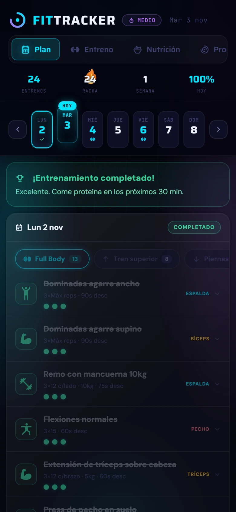
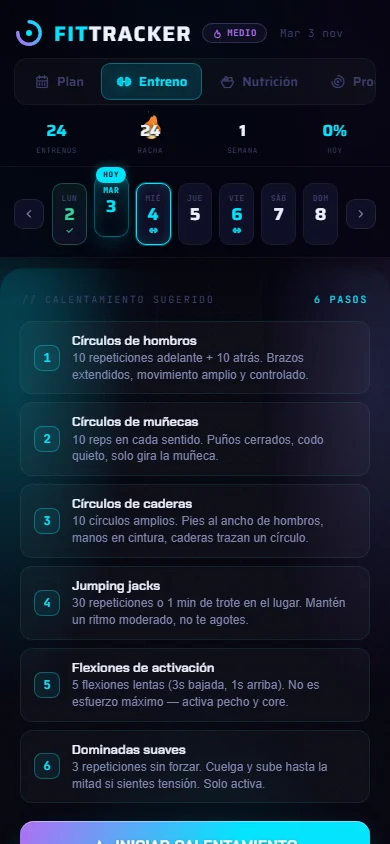
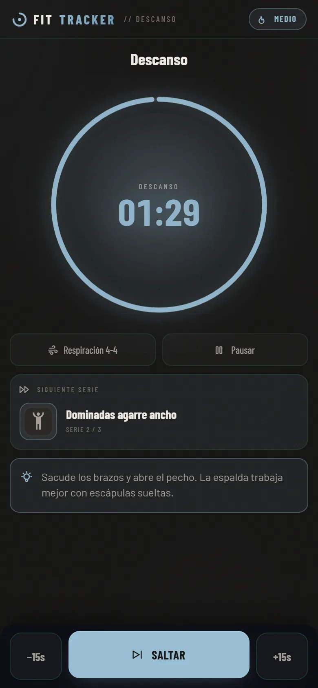
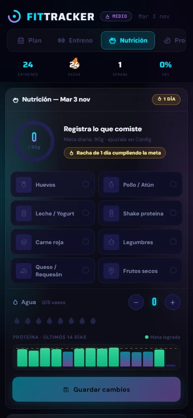
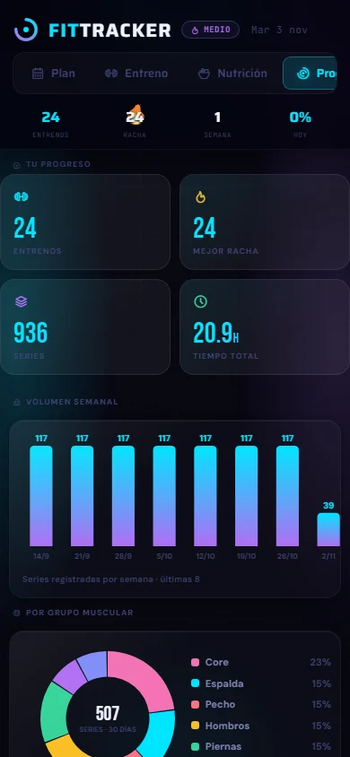

Aplicaciones web completas, del dato a la pantallaComplete web apps, from data to screen
Construyo aplicaciones web completas con Google Apps Script, JavaScript y hojas de cálculo como base de datos: del modelo de datos y el servidor a una interfaz cuidada que funciona en el celular.
I build complete web apps with Google Apps Script, JavaScript and spreadsheets as a database: from the data model and server code to a polished interface that works on a phone.
FitTracker





- Base de datos en 9 hojas de Google Sheets (entrenos, series, nutrición, peso, calendario, equipamiento, logros, ajustes y coach).
- Servidor en Apps Script con 43 funciones y caché, para que la app abra rápido aunque la planilla crezca.
- Progresión automática: sube repeticiones o peso según el tipo de ejercicio y cómo te fue en la sesión anterior.
- Database across 9 Google Sheets (workouts, sets, nutrition, weight, calendar, equipment, achievements, settings and coach).
- Apps Script server with 43 functions and caching, so the app opens fast as the sheet grows.
- Automatic progression: raises reps or weight depending on the exercise type and your last session.
- Gráficos propios en canvas: volumen semanal, grupos musculares, peso y proteína.
- Rachas, logros con celebración, sonidos y una identidad propia («Hierro y tiza»), con tema oscuro y claro.
- Biblioteca de 1.324 ejercicios con pasos y mapa muscular, y cambio de cualquier ejercicio de la rutina por un equivalente.
- Pensada para usarla con una mano en el celular y como tablero en el computador; instalable como app.
- Migrada de Apps Script a React, Node y PostgreSQL, con mis datos reales y 30 pruebas automáticas.
- Custom canvas charts: weekly volume, muscle groups, weight and protein.
- Streaks, celebrated achievements, sounds and its own identity («Iron and Chalk»), with dark and light themes.
- A library of 1,324 exercises with steps and a muscle map, and swapping any routine exercise for an equivalent.
- Built for one-handed use on a phone and as a dashboard on desktop; installable as an app.
- Migrated from Apps Script to React, Node and PostgreSQL, with my real data and 30 automated tests.
Capturas de la app real con datos de ejemplo. El código completo es privado; el núcleo es público en GitHub.
Screenshots of the real app with sample data. The full code is private; its core is public on GitHub.
Minutas de reuniones · HubLabMeeting minutes · HubLab
Cada célula de HubLab se reúne cada semana. El módulo reemplazó las minutas sueltas por un solo lugar donde la reunión queda registrada: quién vino, qué temas avanzaron y qué se acordó.
Every HubLab team meets weekly. The module replaced scattered notes with a single place where each meeting is recorded: who attended, how each topic progressed and what was agreed.
- Acceso: identificación por RUT contra la base de RRHH, PIN por célula y modo lectura para visitas.
- Equipo: roles de líder y colíder, altas y bajas desde RRHH y postulaciones a una célula.
- Historial: cada minuta guarda asistencia, acuerdos y una foto del tablero, con filtros por célula, autor, integrante, estado y fecha.
- Avisos: notificaciones, registro de actividad, tutorial guiado y tema claro u oscuro.
- Access: national ID check against the HR database, per-team PIN and read-only mode for visitors.
- Team: leader and co-leader roles, adding and removing members from HR, and requests to join a team.
- History: each record keeps attendance, agreements and a snapshot of the board, filterable by team, author, member, status and date.
- Alerts: notifications, activity log, guided tutorial and light or dark theme.
Este portafolioThis portfolio
El sitio también es un proyecto: lo diseñé y lo programé para que se sienta como abrir el correo de REZAGO. Lo más trabajado es la escena del sobre en la página de juegos, que avanza con la barra de desplazamiento.
The site is a project too: I designed and built it to feel like opening REZAGO's mail. The most polished part is the envelope scene on the games page, which moves as you scroll.
Sobre míAbout me
Soy Analista Programador titulado de INACAP y vivo en Santiago de Chile. Hago videojuegos como bandioh games, aplicaciones web que la gente usa a diario y pixel art desde 2023.
I'm a software developer with a Programmer Analyst degree from INACAP, based in Santiago, Chile. Since 2023 I've been making games as bandioh games, web apps people use every day, and pixel art.
Trabajo en ciclos cortos: construir, ponerlo en manos de alguien, mirar dónde se traba y corregir. Uso IA como herramienta de programación; el diseño, la escritura, el arte y las pruebas los dirijo yo.
I work in short cycles: build it, put it in someone's hands, watch where they get stuck and fix it. I use AI as a programming tool; I direct the design, writing, art and testing.
ContactoContact
¿Tienes un proyecto o un puesto en mente? Escríbeme.
Have a project or a role in mind? Get in touch.